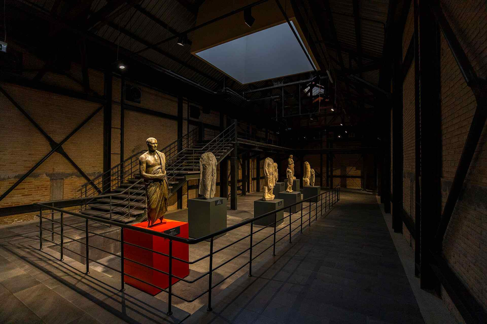

|  |
Adana Müzesi Cumhuriyetin ilanından hemen sonra 1924 yılında kurulmuş olup, Türkiye’nin en eski on müzesinden biri olma unvanını taşımaktadır. İlk olarak çevredeki sütun başlıkları ve lahitlerin Polis Dairesinde toplanmasıyla kurulan müze, Halil Kamil Bey'in müdür olarak atanması ve başarılı çalışmaları sonunda, 1928'de Taşköprü'nün başında şimdi yıkılmış olan Cafer Paşa Camii'nin Medresesi'nde ziyarete açılmıştır. 1950 yılında, Kuruköprü'de yer alan ve bir dönem Etnoğrafya Müzesi olarak kullanılan Kuruköprü Anıt Müzesi’ne taşınmıştır.
05 Ocak 1972 tarihinde ziyarete açılan ve uzun yıllar hizmet veren müze binasının kültür varlıklarının korunması, saklanması ve teşhirin de yetersiz kalmaya başlaması nedeniyle yeni müze binasına ihtiyaç duyulmuştur. Yeni müze alanı ile ilgili yapılan çalışmalar sonucu Adana İli Seyhan İlçesi Döşeme Mahallesi’nde yer alan, kentin ilk fabrikalarından biri olan “Milli Mensucat Fabrikası”nın restore edilerek Adana Yeni Müze Kompleksi olarak değerlendirilmesi uygun bulunmuştur. 2013 yılında Bakanlığımızın yatırım programları dahilinde yapımına başlanan Adana Yeni Müze Kompleksi I. Etap çalışmaları kapsamında, Arkeoloji Müzesi’nin teşhir ve tanzim çalışmaları tamamlanmış olup, 18 Mayıs 2017 tarihinde ziyarete açılmıştır.
Yapımı tamamlanarak ziyarete açılan Adana Arkeoloji Müzesinde, prehistorik dönemden bugüne insanın yaşam serüveninin, dönemlere ait bilgi metinleri, görseller, diaromalar ve canlandırmalar yardımıyla anlatıldığı sekiz salon bulunmaktadır. Salonlarda Prehistorik dönem eserleri, Hitit, Asur, Arkaik, Hellenistik, Roma, Doğu Roma, Selçuklu ve Osmanlı dönemlerine ait heykeller, lahitler, steller, sunaklar ve büstler gibi taş eserler, cam, pişmiş toprak ve bronzdan yapılmış çeşitli kaplar, pişmiş toprak ve bronz kandil ve figürinler, silindir-damga mühürler, cam, bronz ve altın takılar ile diğer arkeolojik buluntular yer almaktadır. Teşhir edilen eserler içerisinde özellikle Hitit Fırtına Tanrısı Tarhunda’ya ait taş heykel, Anadolu Hiyeroglif Yazıtlı Stel, Babil Steli, Adana İli Karataş İlçesi’nde denizden çıkarılan bronz Erkek Heykeli ile Roma dönemine ait mermer “Antropoid Lahit” ve “Akhilleus Lahti” dikkat çekmektedir.
|